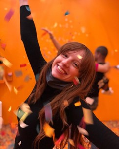

My Story
I am a UI/UX Designer with a diverse background spanning Psychology, Healthcare, Education, and Retail. Each of these fields has contributed invaluable experience to my skill set.
UI/UX design enables me to serve others while pursuing my passion for creativity. My aspiration is to develop solutions that foster comfort, inspiration, and a sense of “coziness” in daily life, as I believe that life should not be overwhelmingly stressful all the time.
Skills & Tools
Relevant Skills:
-
User Research
- Usability Testing
- Wireframing/Prototyping
- Research skills: competive research, User Interviews, and User Surveys
Tools I Use:
- Figma
- Procreate
- GitHub
- VS Code